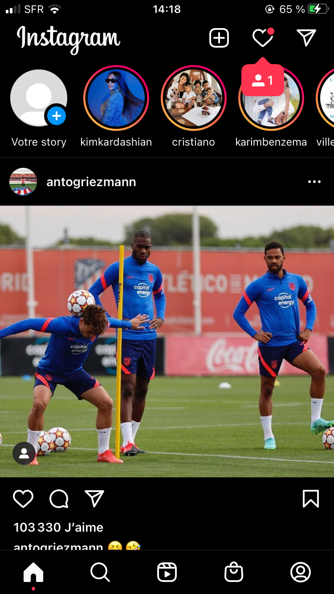
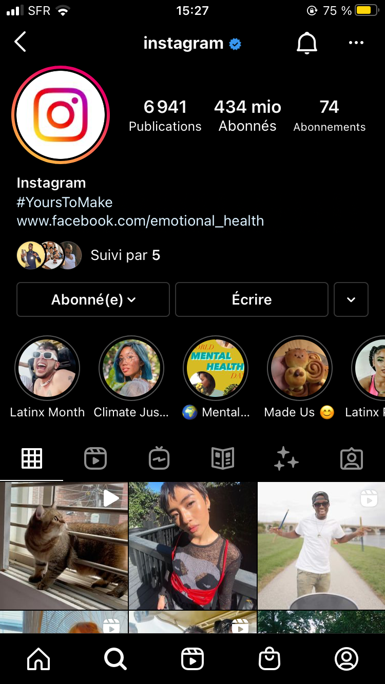

POURQUOI INSTAGRAM ?
 
Intstagram est l'une de mes applications favorites car comme tous les autres réseaux sociaux elle nous permet de rester en contact
avec nos amis et nos proches, de pouvoir discuter et échanger sur des sujets différents et son fil d'actualité est
très simple d'utilisation.
Grâce à ce réseau social, vous avez la possibilité de développer vos talents de phonographe, mais aussi vos talents spéciaux comme
pour la cuisine, le chant, la mode, l'esthétique et autre en modifiant et améliorant seulement vos images.
L’utilisation de ce réseau social est très bénéfique pour tout le monde, mais surtout pour les célébrités et les entreprises touristiques, de modes, de commerce, etc.
Faire découvrir aux internautes, à travers une vidéo, le travail à la chaîne que subissent vos confitures avant leur mise en vente est plus qu’attrayant pour vos clients et les consommateurs. D’ailleurs, la qualité, la propreté et la provenance de vos produits sont mises en avance ainsi publiées. Il est aussi le moyen de communication très efficace pour lancer une marque ou un label. Vous pouvez aussi vous faire découvrir, faire souligner et valoriser vos talents depuis les photos que vous postez depuis Instagram. Véritable vitrine digitale, Instagram met en avant les images récemment publiées. Grâce à ce réseau social, vous avez la possibilité de développer vos talents de phonographe, mais aussi vos talents spéciaux comme pour la cuisine, le chant, la mode, l’esthétique et autre en modifiant et améliorant seulement vos images.